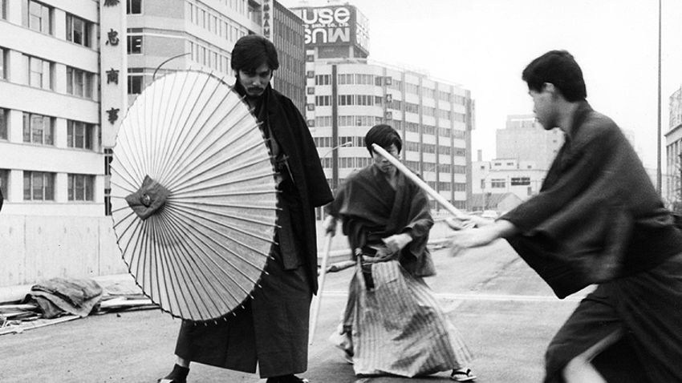

Japon Yeni Dalgası Filmleri
Japon Yeni Dalgası 1950'den 1970'lere kadar etkin olan Japon film yapımcıları grubudur.
Televizyon yüzünden zayıflayan yerel sinemaya olan ilgiyi arttırmak amacıyla bir film stüdyosunun kuruluşuyla doğdu.
Bu bölümde sizlere dünya sinemasını kökünden etkilemiş üç sinema akımından kısaca bahsedeceğiz.
Bu akımlar;
Japon Yeni Dalgası 1950'den 1970'lere kadar etkin olan Japon film yapımcıları grubudur.
Televizyon yüzünden zayıflayan yerel sinemaya olan ilgiyi arttırmak amacıyla bir film stüdyosunun kuruluşuyla doğdu.
Rumen Yeni Dalgası 2000'li yıllardan itibaren varlığını sürdüren, toplumsal ve siyasi konulara odaklanan, gerçekçi anlatımı benimsemiş bir sinema akımıdır.
Çek Yeni Dalgası, 1960'ların Çekoslovak sinemasında varlığını sürdürmüş, sinema kalıplarını yıkan politik temalarıyla öne çıkan filmlerin yer aldığı bir akım olmuştur.